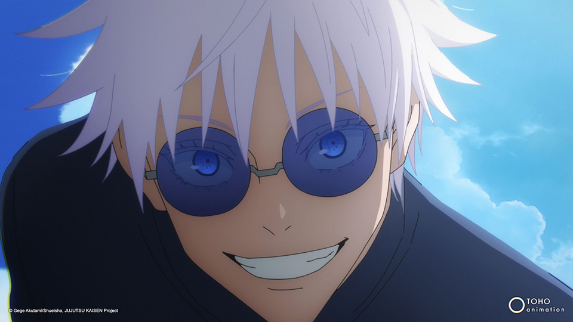
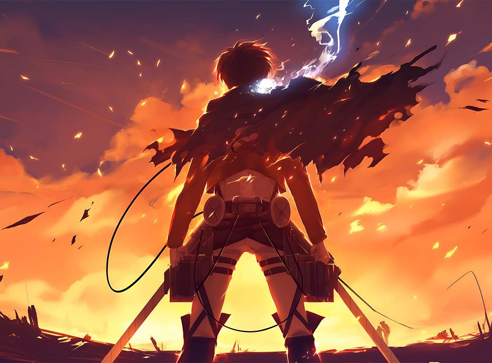
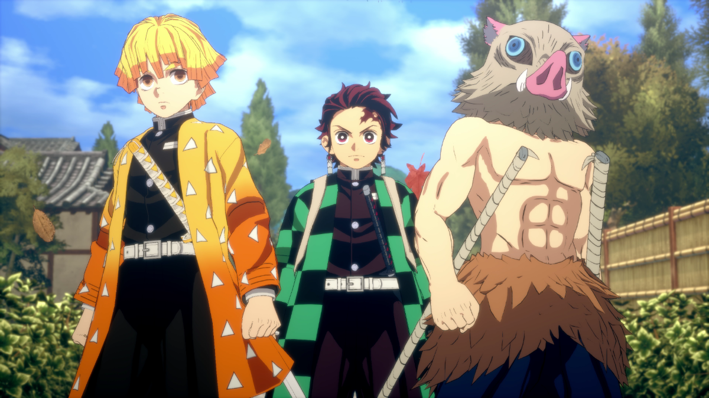

Uno de los estrenos más destacados de esta temporada es
"Jujutsu Kaisen", una obra que ha cautivado tanto a nuevos espectadores como a los más veteranos del anime. Este título, basado en el manga de Gege Akutami, ha logrado mantener la esencia de los shonen clásicos mientras introduce elementos frescos, como la animación de alta calidad y un sistema de poderes bastante intrigante. La historia gira en torno a Yuji Itadori, un joven que se ve involucrado en el mundo de los hechiceros y las criaturas malditas tras ingerir un objeto maldito. Su lucha por salvar a sus amigos y comprender el verdadero significado de su destino ha hecho que "Jujutsu Kaisen" no solo sea un éxito de taquilla, sino también un referente en la forma de narrar la acción y los dilemas morales en el anime moderno.

Por otro lado,
"Attack on Titan" continúa su ascendente carrera con la segunda parte de su última temporada. Este anime, que comenzó en 2013, ha mantenido a sus seguidores cautivos gracias a su impresionante evolución en términos de trama y desarrollo de personajes. En esta entrega, el conflicto entre la humanidad y los titanes se intensifica, mientras que la serie se adentra en los dilemas políticos y éticos que surgen en tiempos de guerra. La complejidad de los personajes y la intensidad de la narrativa han hecho de "Attack on Titan" una de las series más impactantes de la última década, y su final promete ser tan épico como su legado.

Otro estreno importante es
"Demon Slayer: Kimetsu no Yaiba", que sigue cosechando éxitos tras la película "Mugen Train", la cual rompió récords en Japón. La nueva temporada, titulada "Entertainment District Arc", sigue explorando la travesía de Tanjiro Kamado y sus compañeros cazadores de demonios mientras luchan contra poderosas criaturas demoníacas. La animación, cortesía de Ufotable, es sin duda uno de los puntos más fuertes de esta serie, con escenas de acción increíblemente fluidas y detalladas que mantienen a los espectadores pegados a la pantalla. Además, la profundización en los personajes y la aparición de nuevos aliados y enemigos promete seguir cautivando a los fanáticos, mientras se revela más sobre el misterioso pasado de los demonios.

Inicio